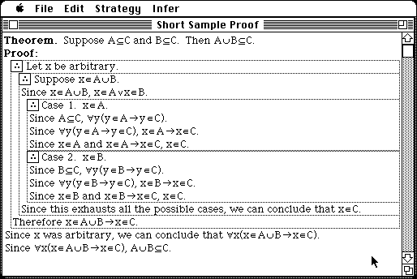

Download
PD.zip (98K) ProofDesigner 1.0c repackaged into a zipped hfs disk image and checksum file. The disk image can be mounted with Mini vMac.
PD.sea.hqx (152K) ProofDesigner 1.0c in the original format.
copyright: Dan Velleman
mod date: Mar 16, 1995
license: free for non-commercial use
from url :
Daniel J. Velleman
"Writes outlines of proofs in elementary set theory, under the guidance of the user. It is designed to help students learn to write proofs". Dan Velleman requested (9/20/2004) mention that an applet version (Java) is also available.

If you find these downloads useful, please consider helping the Gryphel Project, which hosts them.
Here are the md5 checksums for the downloads, signed with Gryphel Key 5:
--------- GRY SIGNED TEXT --------- eba5b5fbe31da3f0e5d7ec11a4caa427 PD.zip c0da5bdc3aa846b72d41f6901077ecff PD.sea.hqx ------- BEGIN GRY SIGNATURE ------- Gry/4Xa8CFcUzxdN/NUbh7EolE+mp9kj9vArD3ShGAB2MhWXpqTChqh+vIKUBH02 r9cdGVOVtS39GQuILhT7HWHUwPtmhjruiqhOc5HKOW35vSVzI0HBzedHESvdi3Ax gEAHlMlUdGMlHams1Jjs1ZYxAuqJPQIk+/XOWzHljRtilaFpfbuOkx3eu4sh7cNH -------- END GRY SIGNATURE --------